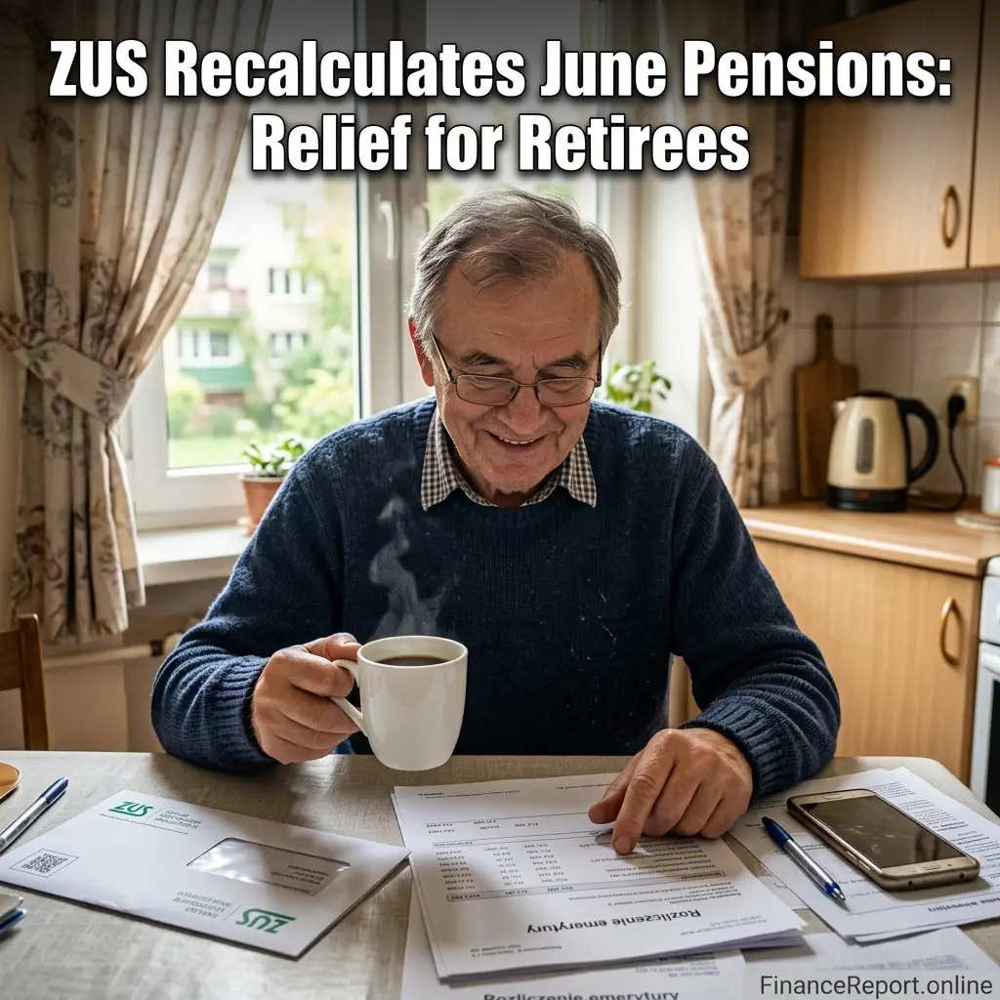

Euphoria Season 3 Premiere: Date & How to Watch
Get the 'Euphoria' Season 3 premiere details, release date, and full episode schedule. Learn how to watch Zendaya return to HBO Max in April 2026.
[Read more]
A turbulent chapter for thousands of elderly citizens in Poland has finally drawn to a close. After years of public and legal disputes, the Polish registry has announced positive changes. Yes—ZUS przeliczył emerytury czerwcowe (ZUS has recalculated the June pensions), bringing much-needed financial justice to seniors who originally filed for their retirement during the deeply disadvantageous month of June.
The Social Insurance Institution (ZUS), Poland's state organization responsible for social security matters, has officially finalized calculations. Consequently, retirees who were victims of the system's "June anomaly" are checking their bank statements and finding pleasant surprises. Pensioners affected are receiving retroactive adjustments leading to significant direct hikes in localized payout scales.
⭐🔥 Recommended: Gift link
According to current statements, the recalculation means many retirees will receive up to 163 PLN more per month deposited directly into their wallets. This permanent correction addresses the notoriously unfair original algorithm that punished citizens solely based on deciding to officially bridge into their retirement age in June rather than surrounding months.
The sheer scale of this correction is monumental. Looking just at specific zones, regional ZUS branches have processed vast swaths of data. In regions like Bydgoszcz alone, there have been over 12,000 raises processed exclusively attributed to these historic policy remedies. This effectively ends an excruciating, long-standing dispute between lawmakers and the elderly demographic.
To grasp the full scale of the ZUS payout increases and dig into exact quotes from financial regulators regarding the retroactive capital distributions, check out the in-depth news coverage via local Polish hubs:
By delivering exactly what was owed under the new corrected legal frameworks, ZUS stabilizes trust among seniors bracing against inflation. As the emerytury czerwcowe are cleared, hundreds of thousands of Poles can finally exhale, their financial dignity restored.
⭐🔥 Recommended: Gift link
Check out this URL to watch multiple videos from various social media platforms in one place: Click here

Get the 'Euphoria' Season 3 premiere details, release date, and full episode schedule. Learn how to watch Zendaya return to HBO Max in April 2026.
[Read more]
A massive fire at the Viva Energy oil refinery in Geelong was extinguished after 12 hours. Discover the cause and the potential impact on Australian petrol prices amid a global fuel crunch.
[Read more]
Rory McIlroy captures his career Grand Slam winning the 2026 Masters. He beat Scheffler by one shot to claim the $4.5M prize at Augusta National.
[Read more]
In a historic shift, Peter Magyar's Tisza Party wins the 2026 Hungarian elections, ending Viktor Orbán's 16-year era.
[Read more]
Barcelona crash out of the UEFA Champions League 2026 quarter-finals as Atletico Madrid advance 3-2 on aggregate. Lamine Yamal and Ferran Torres shone but Eric Garcia's red card sealed Barca's fate.
[Read more]